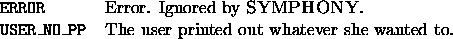

int user_print_branch_stat(void *user, branch_obj *can, cut_data *cut,
char *action)
Print out information about branching candidate can, such as a more explicit problem-specific description than SYMPHONY can provide (for instance, end points of an edge). If verbosity is set high enough, the identity of the branching object and the children (with objective values and termination codes for the pre-solved LPs) is printed out to the standard output by SYMPHONY.

